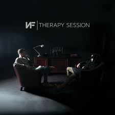

How Could You Leave Us
Song by NF
original video

How could you leave us so unexpected?
We waited, we waited
For you but you just left us
We needed you, I needed you
Yo, I don't know what it's like to be addicted to pills
But I do know what it's like to be a witness, it kills
Mama told me she love me, I'm thinking this isn't real
I think of you when I get a whiff of that cigarette smell, yeah
Welcome to the bottom of hell
They say pain is a prison, let me out of my cell
You say you proud of me, but you don't know me that well
Sit in my room, tears running down my face and I yell
Into my pillowcases, say you coming to get us
Then call a minute later just to tell us you not, I'm humiliated
I'm in a room with a parent that I barely know
Some lady in the corner watching us, while she taking notes
I don't get it mom, don't you want to watch your babies grow?
I guess pills are more important, all you have to say is "no"
But you won't do it, will you? You gon' keep popping 'til those pills kill you
I know you gone but I can still feel you
Why would you leave us?
Why would you leave us?
How could you leave us here?
How could you leave us?
Why would you leave us? Oh
Hey
I got this picture in my room and it kills me
But I don't need a picture of my mom, I need the real thing
Now a relationship is something we won't ever have
Why do I feel like I lost something that I never had?
You shoulda been there when I graduated
Told me you love me and congratulations
Instead you left us at the window waiting
Where you at mom? We're too young to understand, where you at huh?
Yeah, I know them drugs got you held captive
I can see it in your eyes, they got your mind captured
Some say it's fun to get the high but I am not laughing
And what you don't realise and what you not grasping
That I was nothing but a kid who couldn't understand
I ain't gon' say that I forgive you 'cause it hasn't happened
I thought that maybe I feel better as time passes
If you really cared for me, then where you at then?
Why would you leave us?
Why would you leave us?
How could you leave us here?
How would you leave us?
Why would you leave us? Oh
Hey
Our last conversation, you and I sat in the living room
Talking 'bout my music and I brought you something to listen to
You started crying, telling me this isn't you
A couple weeks later, guess you were singing a different tune
You took them pills for the last time, didn't you?
They took you from us once, guess they came back to finish you
Crying my eyes out in the studio is difficult
Music is the only place that I can go to speak to you
It took me everything inside of me to not scream at your funeral
Sitting in my chair, that person talking was pitiful
I wish you were here mama but every time I picture you
All I feel is pain, I hate the way I remember you
They found you on the floor, I could tell that you felt hollow
Gave everything you had plus your life to them pill bottles
You gave everything you had plus your life to them pill bottles
Don't know if you hear me or not, but if you still watching, why?
Why would you leave us?
Why would you leave us?
How could you leave us here?
How would you leave us?
Why would you leave us? Oh
Hey
Sometimes I think about like
Sometimes I think about things like, you know
When I have kids, I'm like
You won't be there, you know?
You won't be there for any of that
And I'll never get to see you again
Sometimes I wish I would've just called you
I wish I would've just picked up the phone, wish you were here
I mean you should've been there for us, you should have been here
Them pills got you, right?
Them pills got you, right?
I wish you were here